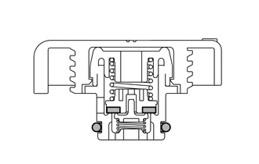
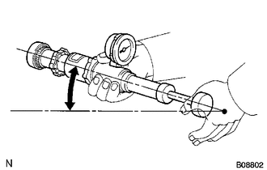

RM3140CG
_51
发动机/混合动力系统
_025040
7ZR-FE 冷却系统
_0127924
散热器
G
7ZR-FE 冷却系统 散热器 车上检查
程序

 1.检查储液罐盖
1.检查储液罐盖
a.

2.063,1.458 2.458,1.458
false
0.813,1.698 1.219,1.698
false
0.646,1.615 0.958,1.771
0.313,0.156
10
*a
2.5,1.375 2.813,1.531
0.313,0.156
10
*b
| *a | O 形圈 |
| *b | 橡胶密封件 |
测量阀门开启压力。
i.
如果 O 形圈上有水渍或异物，则用水和手指刷进行清洁。
ii.
检查并确认 O 形圈没有变形、破裂或膨胀。
iii.
使用散热器盖检测仪前，在 O 形圈和橡胶密封件上涂抹发动机冷却液。
iv.

0.521,0.573 0.823,0.135
0.823,0.135 1.063,0.135
false
1.927,1.031 2.229,0.594
2.229,0.594 2.469,0.594
false
1.104,0.063 1.417,0.219
0.313,0.156
10
*1
2.531,0.51 2.844,0.667
0.313,0.156
10
*a
0.625,1.031 0.938,1.188
0.313,0.156
10
*b
| *1 | 储液罐盖 |
| *a | 散热器盖检测仪 |
| *b | 30°或更大 |
使用散热器盖检测仪时，使其向上倾斜 30°或更大。
v.
泵吸散热器盖检测仪数次，并检查最大压力*。
- 泵送速度:
每秒钟泵送 1 次
- 提示：
-
*：即使储液罐盖不能保持最大压力，也不属于故障。
- 判断标准:
项目 规定状态 标准值
（新盖）94 至 122 kPa（1.0 至 1.2 kgf/cm2，13.6 至 17.7 psi） 最小标准值
（旧盖）78 kPa (0.8 kgf/cm2, 11.3 psi)
如果最大压力小于最小标准值，则更换储液罐盖。